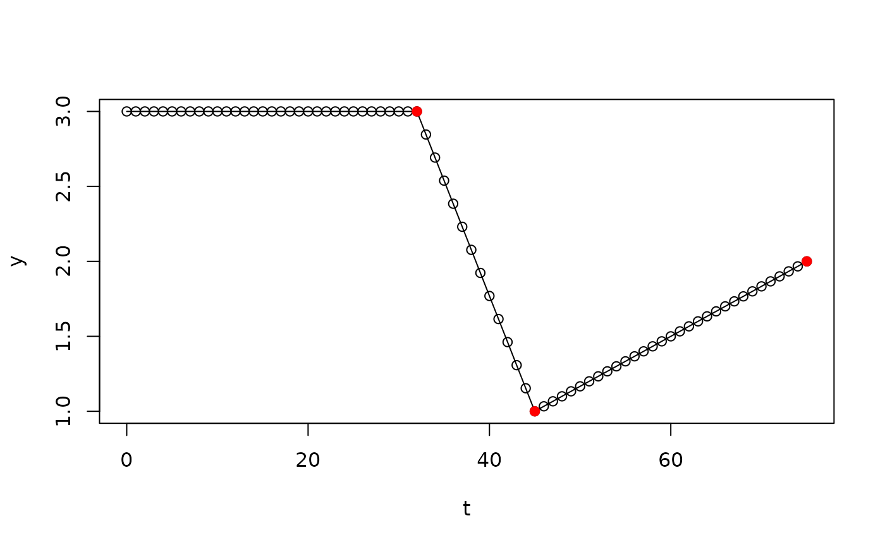
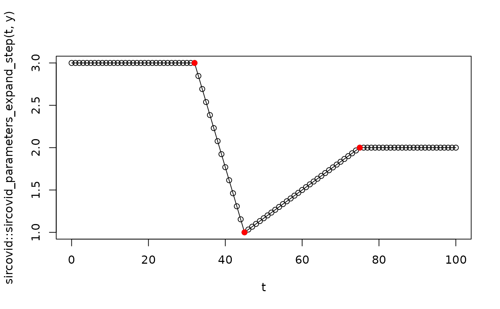
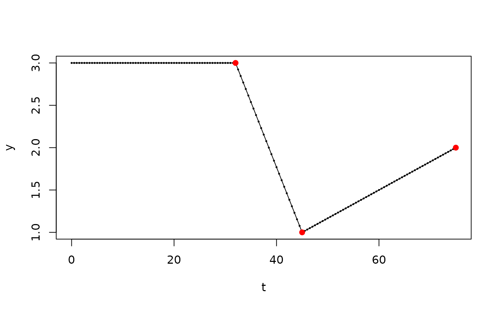

Construct a piecewise linear quantity over time array for use within sircovid models.
sircovid_parameters_piecewise_linear(date, value, dt)Either NULL, if one value of the quantity will be used for
all time steps, or a vector of times that will be used as change
points. Must be provided as a sircovid_date(), i.e., days into
2020. The first date must be 0.
A vector of values to use for the quantity - either a scalar
(if date is NULL) or a vector the same length as date.
The timestep that will be used in the simulation. This
must be of the form 1 / n where n is an integer representing
the number of steps per day. Ordinarily this is set by sircovid
internally to be 0.25 but this will become tuneable in a
future version.
Returns a vector of piecewise linear values, one per timestep, until the values stabilise. After this point the quantity is assumed to be constant.
sircovid_parameters_expand_step() - see examples below
# If "date" is NULL, then the quantity is constant and this function is
# trivial:
sircovid::sircovid_parameters_piecewise_linear(NULL, 0.1, 0.25)
#> [1] 0.1
date <- sircovid::sircovid_date(
c("2020-02-01", "2020-02-14", "2020-03-15"))
value <- c(3, 1, 2)
y <- sircovid::sircovid_parameters_piecewise_linear(date, value, 1)
# The implied time series looks like this:
t <- seq(0, date[[3]])
plot(t, y, type = "o")
points(date, value, pch = 19, col = "red")

# After 2020-03-15, the quantity value will be fixed at 2, the value
# that it reached at that date.
# You can see this using sircovid_parameters_expand_step
# If a vector of dates is provided then, it's more complex. We'll
# use dt of 1 here as it's easier to visualise
t <- seq(0, 100, by = 1)
sircovid::sircovid_parameters_expand_step(t, y)
#> [1] 3.000000 3.000000 3.000000 3.000000 3.000000 3.000000 3.000000 3.000000
#> [9] 3.000000 3.000000 3.000000 3.000000 3.000000 3.000000 3.000000 3.000000
#> [17] 3.000000 3.000000 3.000000 3.000000 3.000000 3.000000 3.000000 3.000000
#> [25] 3.000000 3.000000 3.000000 3.000000 3.000000 3.000000 3.000000 3.000000
#> [33] 3.000000 2.846154 2.692308 2.538462 2.384615 2.230769 2.076923 1.923077
#> [41] 1.769231 1.615385 1.461538 1.307692 1.153846 1.000000 1.033333 1.066667
#> [49] 1.100000 1.133333 1.166667 1.200000 1.233333 1.266667 1.300000 1.333333
#> [57] 1.366667 1.400000 1.433333 1.466667 1.500000 1.533333 1.566667 1.600000
#> [65] 1.633333 1.666667 1.700000 1.733333 1.766667 1.800000 1.833333 1.866667
#> [73] 1.900000 1.933333 1.966667 2.000000 2.000000 2.000000 2.000000 2.000000
#> [81] 2.000000 2.000000 2.000000 2.000000 2.000000 2.000000 2.000000 2.000000
#> [89] 2.000000 2.000000 2.000000 2.000000 2.000000 2.000000 2.000000 2.000000
#> [97] 2.000000 2.000000 2.000000 2.000000 2.000000
plot(t, sircovid::sircovid_parameters_expand_step(t, y), type = "o")
points(date, value, pch = 19, col = "red")

# If dt is less than 1, this is scaled, but the pattern of
# change is the same
y <- sircovid::sircovid_parameters_piecewise_linear(date, value, 0.5)
t <- seq(0, date[[3]], by = 0.5)
plot(t, y, type = "o", cex = 0.25)
points(date, value, pch = 19, col = "red")
